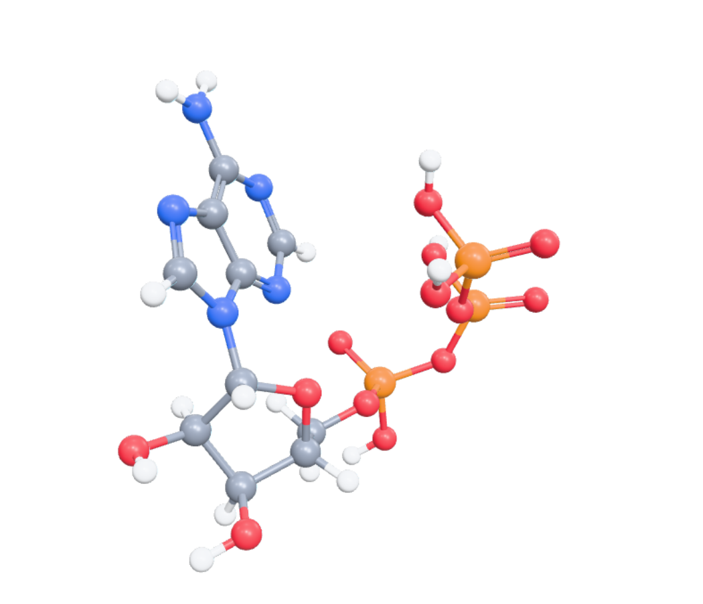

Everything below this line is the page itself, at full width. The molecule is a still picture of the real ATP model here; on the real site it stays live and draggable. Scroll to the bottom for the phone version and an alternative hero.
Free 3D chemistry lessons
Turn molecules around, watch reactions happen, and see why it works. Short, visual lessons for Gen Chem, Organic, and Biochem.
Continue: Molecular shapes · Lone pairs change the shape · step 3 of 4
Go straight to what your class is covering. Every topic opens with a short guided lesson.
Calm flashcards with a 3D picture for every question. Missed ones come back later.
Experimental structure Built on real Protein Data Bank structures. How we keep it accurate
In organic chemistry, and again in biochemistry, I had a hard time picturing molecules, proteins, and mechanisms from flat textbook drawings. This is the tool I wish I’d had: free, quick to open, and built so you can look first and read second.
Phone (390 px)
Free 3D chemistry lessons
Turn molecules around, watch reactions happen, and see why it works.
Pick your courseAlternative hero: centered
Short, visual lessons for Gen Chem, Organic, and Biochem.
I recommend the side-by-side hero at the top of this page. It gives the live molecule room to be big and draggable right away, and the headline stays large. The centered version looks calm, but pushes the molecule (the thing that makes the site special) smaller and lower.